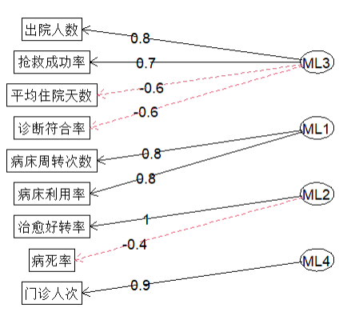
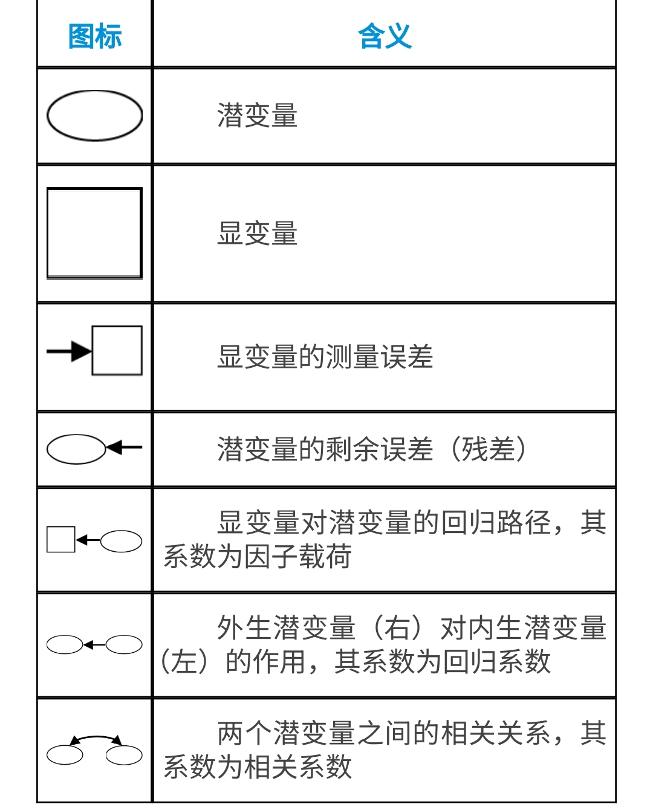
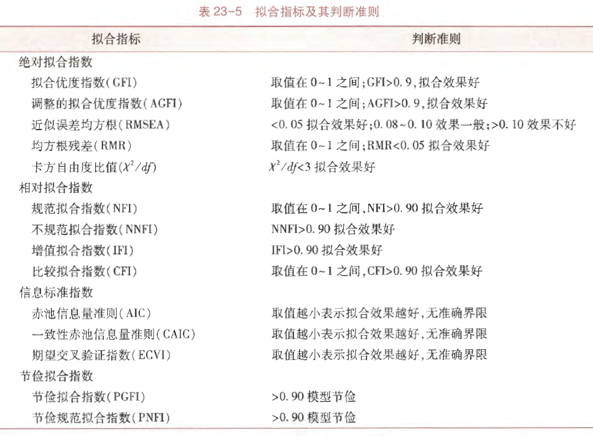
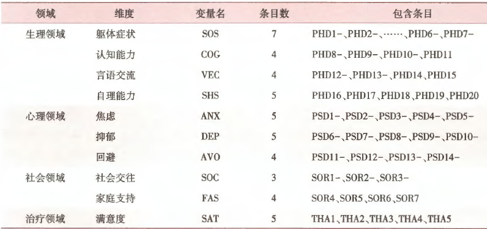
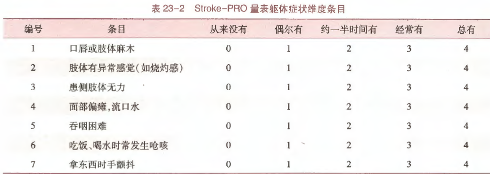
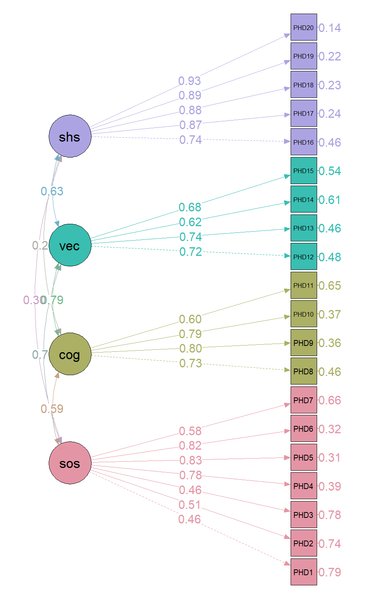
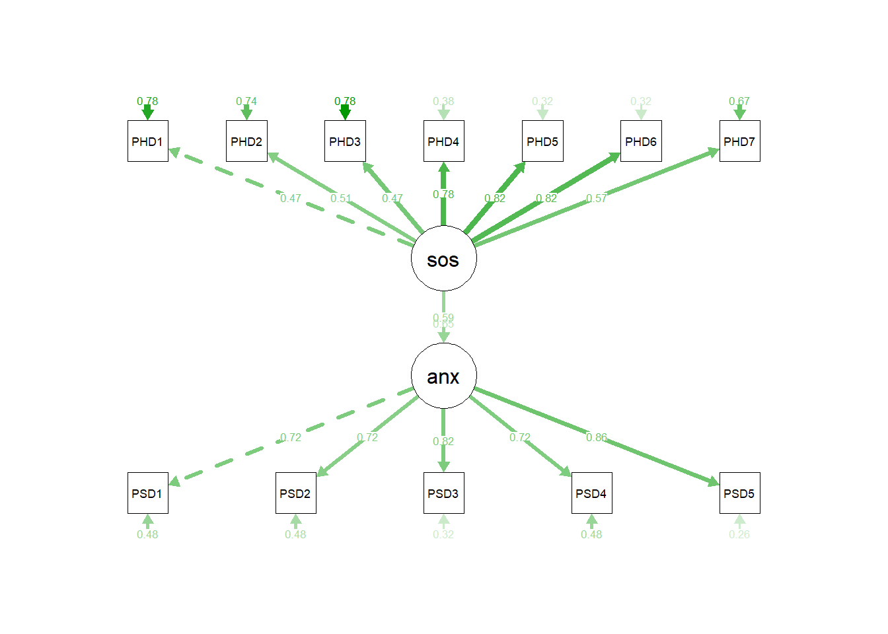
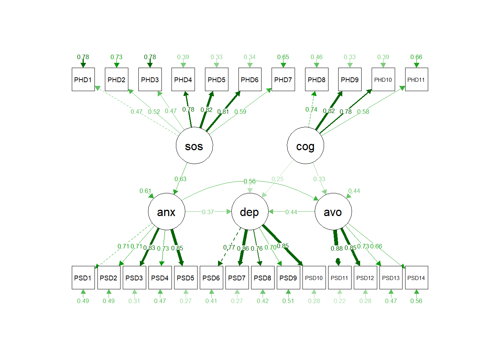

# 一个完整的lavaan语法
myModel <- ' # 回归模型
y1 + y2 ~ f1 + f2 + x1 + x2
f1 ~ f2 + f3
f2 ~ f3 + x1 + x2
# 潜变量
f1 =~ y1 + y2 + y3
f2 =~ y4 + y5 + y6
f3 =~ y7 + y8 + y9 + y10
# 方差和协方差
y1 ~~ y1
y1 ~~ y2
f1 ~~ f2
# 截距项
y1 ~ 1
f1 ~ 1
'34 结构方程模型
本文涉及大量理论知识，不喜欢的可以直接跳到R语言实战部分，但是模型的构建和结果的解读强烈依赖于理论知识。（本来我也不想介绍理论知识，但是发现不懂理论知识根本进行不下去…）
34.1 理论知识
结构方程模型和中学时学过的方程组的概念非常类似！其实就是一个解方程的过程。
有时我们的数据可能有非常多的变量，比如我们有x1x10，y1y10，z1~z10，一共30个变量，不同的x之间可能都有关系，不同的y之间可能都有关系，不同的z之间可能都有关系，x,y,z之间可能也有关系，这时候你只写一个方程（或者叫模型、公式都可以）是不可能说清楚这么多关系的，比如你只写y1~x1+x2+x3+x5，那么剩下的那么多变量的关系你怎么解释？
这时候你就可以用结构方程模型了，因为结构方程模型可以包括多个模型，每一个变量之间的关系你都可以写一个方程出来，你把这些方程全都放在一起解决（是不是和方程组的概念很像？），就是结构方程模型了，它可以帮你算清楚这么多复杂的关系。
以下是正式的概念：
结构方程模型（Structural Equation Modeling，SEM）是一种多元统计分析方法，属于潜变量分析的一种。结构方程模型是一种基于变量之间的协方差的矩阵来分析多变量之间结构关系的多元统计方法，也被称为协方差结构模型。SEM的主要作用是研究可观测变量和不能直接测量的变量之间的结构关系，同时还能考虑到测量误差。
潜变量分析是用于处理不能直接观测到的变量的统计方法，常见的潜变量分析方法有探索性因子分析(EFA)、验证性因子分析(CFA)、结构方程模型(SEM)、潜在类别分析(LCA)、路径分析、增长曲线分析等。
34.1.1 潜变量和显变量
在结构方程模型中，变量分为观测变量（observed variable）和潜变量（latent variable）。
- 观测变量是可以直接测量的变量，比如考试成绩、身高、体重等，又被称为显变量（manifest variable）、显在变量、指示变量（indicator）、度量变量（measurement variable）。
- 潜变量是无法直接测量，需要通过观测变量来间接反映的变量，像学习能力、幸福感、工作满意度等，又被称为潜在变量、隐变量、潜在因子（latent factor）、潜在特质（latent trait）。
34.1.2 外生变量和内生变量
无论是潜变量还是显变量，均可分为内生变量（endogenous variable）与外生变量（exogenous variable)。
- 内生变量指模型需要解释的变量，在模型中被看作因变量或效应变量，包括内生显变量（一般用
Y表示）与内生潜变量（一般用η表示）； - 外生变量指能够对内生变量产生影响的变量，在模型中被看作自变量或解释变量，包括外生显变量（一般用
X表示）与外生潜变量（一般用ξ表示）。
34.1.3 测量模型和结构模型
SEM中的模型主要包括两种（SEM类似于多个方程组成的方程组，按照使用目的，这些方程大致可以分为两类）：
- 测量模型(measurement model)：用来描述观测变量和潜变量之间的关系。比如，我们想研究学生的“学习能力”这个潜变量、可能会通过“语文成绩”、“数学成绩”、“英语成绩”等观测变量来衡量。测量模型就是要确定这些观测变量在多大程度上能够准确地反映“学习能力”这个潜变量。
- 结构模型(structural model)：用于描述潜变量之间的关系。比如，我们认为“学习能力”会影响“学习成绩”，“学习态度”也会影响“学习成绩”，同时“学习态度”还可能会影响“学习能力”，这些潜变量之间的相互影响关系就构成了结构模型。
所以，SEM其实就是多个模型的结合体，因为你只用一个模型是无法说清楚这么多变量之间的关系的，所以要建立多个方程（模型）。
当SEM只有测量模型，没有结构模型时，被称为验证性因子分析（confirmatory factor analysis，CFA）。当SEM只有结构模型，没有测量模型时，被称为路径分析（path analysis）。
34.1.4 路径图
路径图是用于描述变量之间关系的示意图，是SEM和验证性因子分析中必须了解的图形。其实就是用图形化的方式展示潜变量和显变量、潜变量和潜变量之间的关系，以及关系的大小（载荷）和方向等。由于SEM和CFA中通常涉及多个变量之间的复杂关系，只看数字或者文字描述很难直接理清他们的关系，但是图形可以直接反映，毕竟一图胜千言！
其他常用的做SEM的软件，比如AMOS，是以图形界面为核心的，所以在使用这种软件进行SEM第一步就是要建立路径图，使用路径图假设各个变量之间的关系。但是R语言是以代码为核心的，直接使用代码表示多个变量之间的关系即可（即直接建立多个模型（在R中就是建立多个公式）），路径图更多是作为结果呈现的内容，而不是必须第一步就要做的。
在之前的探索性因子分析中出现过一个简单的路径图：

这个图就是一个简单的路径图，展示了4个潜变量和各自的显变量之间的关系，并且标注了因子载荷以及正负，看起来很直观。
在CFA和SEM中，变量之间的关系比这个要复杂的多，为了规范，路径图中的圆圈、方框、箭头等都有明确的含义，以下是简单说明：

34.1.5 SEM和CFA
SEM与验证性因子分析（CFA）关系密切。根据分析目的，因子分析可分为探索性因子分析（exploratory factor analysis，EFA）和验证性因子分析（confirmatory factor analysis，CFA）。
- 探索性因子分析：研究者事先并不清楚或不确定潜在因子与可测变量之间的关联，也不清楚可测变量会隐含多少个潜在因子。
- 如果研究者根据以往的研究经验或根据探索性因子分析的结果，对所要研究的可测变量与潜在因子之间的内在结构已然清楚，即已知哪些可测变量可能被哪些潜在因子影响，只需进一步确定可测变量在潜在因子上的载荷大小，并验证这种结构与数据的吻合程度，即为验证性因子分析。
与探索性因子分析要求因子之间独立不同的是，验证性因子分析允许潜在因子之间相关。
验证性因子分析在社会、心理、教育、管理及医学等研究领域，常用于评价某个测验或量表的构念效度（constructure validity，又称结构效度）。验证性因子分析与结构方程模型有着密切的联系，其实质是SEM的测量模型部分。验证性因子分析的数学模型与探索性因子分析的数学模型类似，也是联系潜在因子与可测变量的系列方程组。验证性因子分析从理论模型的设定、参数估计、模型的评价以及模型的修正与解释等一系列的过程皆与结构方程原理类似。
构念效度指的是测量工具能够准确测量理论上的构念或特质的程度。简单来说，就是看我们所使用的测量工具（如问卷、测试等）是不是真的在测量我们想要测量的那个抽象概念。比如，我们想测量一个人的“创造力”，那么所设计的测量工具是否真的能准确地把这个人的创造力水平反映出来，而不是测到了其他无关的东西，这就是构念效度要解决的问题。
回归系数在结构模型中表示潜变量之间的路径系数，而测量模型中的因子载荷也是回归的一种形式。方差和协方差则涉及到潜变量的残差以及观测变量之间的关系。这些参数是模型估计的核心部分，用来评估模型是否合适，以及各个变量之间的关系强度。
34.2 分析步骤
简单看下这部分，有个印象即可。
在应用结构方程模型分析变量之间的复杂关系的时候，一般可以分为5个步骤进行：
- 模型设定（modelspecification）；
- 模型识别（model identification）；
- 模型估计（model estimation）；
- 模型评价（model evaluation）；
- 模型修正（model modification）。
34.2.1 模型设定
根据研究目的和专业知识建立起观测变量与潜变量以及潜变量之间的关系，即为模型的设定。一般有3种方式设立欲拟合的结构方程模型。
- 直接确定模型：对研究者提出的单一的假设模型进行验证。这种纯粹的验证理论模型的分析较少。
- 选择最优模型：研究者提出若干个理论模型，从中选出一个拟合优度最佳的。
- 导出模型：研究者先提出一个或几个理论模型，结合专业知识不断进行修正，直至模型能够很好地拟合数据为止。这种分析方法比较多见。
34.2.2 模型识别
模型识别的主要任务就是在初始模型建立之后，考虑模型中的每一个未知参数能否由观测数据得到唯一解。根据结构方程组的个数和未知参数的个数之间的关系，模型可以分为恰好识别模型、识别不足模型、过度识别模型。
- 对于识别不足的模型，待估计参数的个数多于样本中所能得到的方程的个数，此时进行参数估计能得到无穷多个解，比如对于方程
a*b=16，求a和b的值，这个结果有无数个，因为有2个未知数却只有1个方程，好理解吧？ - 对于恰好识别模型，虽然可以得到唯一的参数估计值，但是无法检验其对数据的拟合优度，因为此时的自由度和卡方值都是0。意思就是只有唯一解，没法比较优劣了，那还有啥用！
- 对于过度识别模型，可以对参数进行假设检验，因此过度识别模型是结构方程模型本身所追求的。意思就是可以有多个解，但是是有限的，这样还能比较优劣，这是咱们希望的情况！
34.2.3 模型估计
也就是结构方程模型估计参数的过程。主要有以下几种方法（简单看下名字就好了…）：
最大似然估计 最大似然估计（maximum likelihood estimation，MLE）最常用。对于一个给定的资料，ML法是使得参数的似然函数最大化。最大似然估计有许多优良特性。它是无偏的渐近有效的一致性估计，而且不受测量单位的影响。但是，ML估计需要假设观测变量为连续性变量，且具有多元正态分布（multi-variate normal distribution）。观测变量的非正态性（non-normality），尤其是在高峰度情况下，虽然参数的估计值仍有效，但往往会得到不正确的标准误。对这个问题可以采取：①考虑对偏态分布的变量进行转换，使其近似于多元正态分布；②将可能导致偏态的离群值（outlier）删除；③应用自助重抽样（bootstrap-resampling）来估计参数估计的方差以进行显著性检验。
未加权最小二乘法 未加权最小二乘法（unweighted least squares，ULS）是将残差阵中的每一元素求平方和并使之最小，然后利用偏导数方法求出参数估计值。这种估计方法对观测变量的分布无特殊要求，只要参数可以识别，就能获得一致性估计值。
广义最小二乘法 广义最小二乘法（generalized least squares，GLS）估计对（S-∑(θ)）的所有元素取相同的权重，即假定所有元素具有相同的方差协方差。当违反这些假定时，最小二乘估计是有偏差的，对此可采用加权处理。GLS估计是一致有效的估计。
加权最小二乘法 加权最小二乘法（weighted least squares，WLS）是Browne于1984年提出的一种渐近式分布无干扰（asymptotically distribution free，ADF）的估计方法。这种方法不要求观测变量具有多元正态性。
对角加权最小二乘法 当变量数很大时，要计算待估参数的渐近协方差阵相当费时间，并且占用大量的计算机内存。可以用对角加权最小二乘法（diagonal weighted least squares，DWLS）估计参数。DWLS得不到参数的渐近有效估计，但它能给出介于ML和WLS之间的折中估计。
34.2.4 模型评价
在获得了参数的估计值后需要对模型的拟合效果进行评价。一般而言需提供几个方面的信息：①参数估计的合理性及显著性检验；②测量模型的评价；③整体模型的评价。
1.参数估计与假设检验
在模型设定正确的前提下，参数的估计值应该具有合理的取值范围及正确的符号；反之，如果出现与此背离的情形，如方差为负值，相关系数的绝对值大于1，协方差或相关矩阵为非正定阵等，则表明模型设定有误或输入的矩阵缺少足够的信息。此外，还应该对每一个自由参数做是否为零的检验。在多元正态分布的前提下，ML和GLS估计能够获得正确的标准误，WLS估计在应用了正确的加权矩阵时所得到的标准误也是正确的，对于ULS和DWLS估计仅能得到渐近标准误，而IV和TSLS则不能提供标准误。并且，即使在观测变量有所偏离正态的情况下，ML和GLS也能得到稳健的标准误。单个参数的检验期望拒绝零假设，因为这表明将其设为自由参数是合理的：反之，当结论为不拒绝零假设时提示将其设为自由参数可能是不恰当的。此时，应结合实际理论将其固定为0。
2.模型评价
得到参数的估计值，就意味着得到一个特定的理论模型。接下来的问题是，如何知道这个特定的模型拟合实际数据的程度，涉及模型评价问题，至少需要进行两方面的评价：①检验模型中的参数是否具有统计学意义；②模型整体拟合程度的评价。
即便是理论模型整体拟合效果很好，也不能保证所有的待估参数均具有统计学意义，所以应该对每个参数是否具有统计学意义进行假设检验。当某个参数的检验结果不具有统计学意义时，意味着将该参数设为自由参数是不恰当的，应将其固定为0，并对模型重新拟合与评价。用于验证性因子分析的许多软件（如LISREL）会在输出结果中给出参数的标准误、统计量值等。此外，当潜在因子的协方差矩阵以及度量误差的协方差矩阵的对角元素出现负值时，表明模型的设定有不恰当之处，因为这些元素实质均为方差，方差应该是非负值。
对模型整体拟合效果的评价指标主要是拟合指数，拟合指数有很多，每个指数的计算及意义不尽相同。绝大多数的拟合指数是基于拟合函数计算出来的，卡方值是反映模型与数据拟合程度最直接的指标，卡方值越大，模型与数据拟合效果越不好。因为卡方值容易受到样本含量N影响，即在N较大时，卡方值也很大：N较小时，卡方值则很小，也就是说，卡方值往往不能很好地反映模型与数据的实际拟合程度。为了弥补卡方值的缺陷，许多学者先后提出了儿十个拟合指数。这些拟合指数大致可以分为：绝对拟合指数（absolute fit index）、相对拟合指数（comparative fit index）、信息标准指数（information criteria fit index）、节俭拟合指数（parsimony fit index）。
一个比较理想的拟合指数应该具有这样的特点：①不受样本含量的影响；②惩罚复杂模型（自由参数较多的模型）；③对误设模型敏感。
验证性因子分析与结构方程模型的拟合指标基本相同，下表列出了部分常用的拟合指标。

上表中没有的几个指标补充：
- Tucker-Lewis Index (TLI)：Tucker Lewis指数一般会在结构方程模型中报告，也被称为非范拟合指数（Non-Normed Fit Index，NNFI），是在因子分析以及结构方程模型等领域用于评估模型拟合优度的一个重要指标，通常希望大于0.9，值越大说明拟合效果越好。
- SRMR：Standardized Root Mean Square Residual，标准化残差均方根，SRMR的值越接近0，表示观测数据与模型预测数据之间的差异越小，即模型对数据的拟合效果越好。一般来说，当SRMR小于0.08时，认为模型拟合良好；当SRMR小于0.05时，表明模型拟合非常好。
34.2.5 模型修正
对初始理论模型可进行调整，以得到拟合效果较佳的模型，可通过修正指数（modification index，MI），适当地改变模型中某些变量之间的关系，或设定某些误差项，或限制某些结构参数。MacCallum给出一些建议：
- 首先，在描述结构模型的问题前，需先解决测量模型的设定误差；
- 其次，一次只能做一个修正，以免影响其他参数的估计。
- 最后，修正过程应该先增加有意义的参数，如果需要，再减少无意义的参数。而非先减少无意义的参数，再增加有意义的参数。
- 另外，在进行模型修正时，应该有实际的理论做指导，而不能仅凭样本数据提供的信息做出判断。
34.3 R语言实战
以上是理论知识（太复杂了！），下面是R语言实战。
34.3.1 lavaan简介
lavaan是专门用于潜变量分析的R包，它是latent variable analysis（潜变量分析）的缩写。
在常规的R公式语法中，波浪号~左边的变量是因变量，右边的变量是自变量，多个自变量以+连接，比如：
y ~ x1 + x2 + x3 + x4在lavaan中，这种形式也被保留下来，表示常规的回归的模型。稍有不同的地方是，SEM和CFA中可能会同时出现多个回归模型（叫公式、方程都可以），用来表示多个变量之间的关系，比如：
# 同时出现3个公式
y ~ f1 + f2 + x1 + x2
f1 ~ f2 + f3
f2 ~ f3 + x1 + x2SEM中的变量分为潜变量和显变量，如果~两侧是不同类型的变量（比如：~左侧是潜变量，右侧是显变量），那么就会和常规的回归模型混淆，并且也难以区分谁是潜变量、谁是显变量，所以lavaan引入了=~，如果潜变量x由z1,z2,z3这3个显变量测量，可以写成如下格式：
x =~ z1+z2+z3在SEM的求解过程中，变量之间的协方差和方差结构是必须的，lavaan中通过~~定义变量之间的协方差和方差结构。如果~~的两边是同一个变量，则是表示方差，如果是不同的变量，则是表示协方差。比如：
y1 ~~ x2 # 估计y1和x2之间的协方差
z1 ~~ x3 # 估计z1和x3之间的协方差一个完整的lavaan模型公式是由以上4个部分组成的，并且必须使用单引号'引起来，例如：
但是在实际使用时，只有潜变量部分的公式才是必须的，其余部分的公式有时可以省略（会默认计算其余部分，也有例外，要根据实际情况来）。
34.3.2 数据简介
结合一个具体的例子说明（孙振球医学统计学第5版例23-1）。
某课题组采用脑卒中患者报告临床结局量表（下文简述Stroke-PRO量表）调查了295例脑卒中患者，用于评估其治疗结局。Stroke-PRO量表中，生理领域包含4个维度、20个条目；心理领域包含3个维度、14个条目；社会领域包含2个维度、7个条目；治疗领域包含1个维度、5个条目。量表结构如下：

上表中每个条目是一个观测变量，每个维度是一个潜变量。
以生理领域中躯体症状（SOS）这一维度为例，患者的躯体症状无法直接测量，需通过一些相关条目获取，如采用Likert5级计分，维度与条目信息如下：

假如我们需要探讨脑卒中患者生理领域的躯体症状、认知能力和心理领域的焦虑、抑郁、回避之间的相互作用关系，将上述维度作为潜变量，各条目作为观测变量，可以从以下两方面着手分析：
- 采用验证性因子分析评价量表的结构效度；
- 采用结构方程模型分析不同维度间的关联关系。
34.3.3 验证性因子分析
验证性因子分析本质上是结构方程模型中的测量模型，常用于评价某个测验或者量表的结构效度（construct validity），又称为构念效度。
构念是指在科学研究中，研究者为了描述、解释和预测现象而构建的抽象概念，如智力、焦虑、工作满意度等。构念本身无法直接观察和测量，需要通过一些可观测的指标（如题目、行为表现等）来间接测量。构念效度指的是测量工具能够准确测量理论上的构念或特质的程度。简单来说，就是看我们所使用的测量工具（如问卷、测试等）是不是真的在测量我们想要测量的那个抽象概念。比如，我们想测量一个人的 “创造力”，那么所设计的测量工具是否真的能准确地把这个人的创造力水平反映出来，而不是测到了其他无关的东西，这就是构念效度要解决的问题。
用验证性因子分析评价Stroke-PRO量表生理领域即其躯体症状（SOS）、认知能力（COG）、言语交流（VEC）及自理能力（SHS）的结构效度。
先读取数据和加载R包：
library(lavaan) # 做SEM
library(haven) # 读取spss格式的数据
df23_2 <- haven::read_sav("datasets/例23-02.sav")
dim(df23_2)
## [1] 295 20
#df23_2 <- haven::zap_formats(df23_2)
df23_2[1:4,1:4] # 展示前4行和前4列
## # A tibble: 4 × 4
## PHD1 PHD2 PHD3 PHD4
## <dbl> <dbl> <dbl> <dbl>
## 1 5 5 5 5
## 2 4 4 4 5
## 3 5 5 5 5
## 4 5 4 5 5数据结构如上，每一行是一个患者，每一列是一个条目，其中的数字是评分。
首先是构建模型，把潜变量和显变量之间的关系用公式的形式写出来。在这个示例中潜变量就是躯体症状（SOS）、认知能力（COG）、言语交流（VEC）及自理能力（SHS），显变量就是各自对应的条目，所以公式有4个：
# 验证性因子分析只有测量模型，没有结构模型
cfa_models <- ' sos =~ PHD1+PHD2+PHD3+PHD4+PHD5+PHD6+PHD7
cog =~ PHD8+PHD9+PHD10+PHD11
vec =~ PHD12+PHD13+PHD14+PHD15
shs =~ PHD16+PHD17+PHD18+PHD19+PHD20 '使用cfa函数拟合验证性因子分析模型即可：
fit <- cfa(cfa_models, data = df23_2)查看拟合结果(结果和书中基本是一样的)：
summary(fit, standardized=T, rsquare = T)
## lavaan 0.6-19 ended normally after 46 iterations
##
## Estimator ML
## Optimization method NLMINB
## Number of model parameters 46
##
## Number of observations 295
##
## Model Test User Model:
##
## Test statistic 630.894
## Degrees of freedom 164
## P-value (Chi-square) 0.000
##
## Parameter Estimates:
##
## Standard errors Standard
## Information Expected
## Information saturated (h1) model Structured
##
## Latent Variables:
## Estimate Std.Err z-value P(>|z|) Std.lv Std.all
## sos =~
## PHD1 1.000 0.675 0.458
## PHD2 0.975 0.156 6.259 0.000 0.658 0.508
## PHD3 1.088 0.184 5.925 0.000 0.734 0.464
## PHD4 1.415 0.185 7.647 0.000 0.955 0.779
## PHD5 1.433 0.183 7.811 0.000 0.966 0.831
## PHD6 1.363 0.175 7.785 0.000 0.920 0.822
## PHD7 1.121 0.167 6.721 0.000 0.756 0.579
## cog =~
## PHD8 1.000 0.931 0.734
## PHD9 1.107 0.087 12.723 0.000 1.031 0.800
## PHD10 1.088 0.086 12.635 0.000 1.013 0.794
## PHD11 0.804 0.084 9.554 0.000 0.749 0.595
## vec =~
## PHD12 1.000 1.000 0.724
## PHD13 0.965 0.081 11.942 0.000 0.965 0.737
## PHD14 0.659 0.065 10.068 0.000 0.659 0.621
## PHD15 0.779 0.071 11.018 0.000 0.779 0.680
## shs =~
## PHD16 1.000 1.031 0.737
## PHD17 1.233 0.080 15.470 0.000 1.271 0.873
## PHD18 1.394 0.090 15.562 0.000 1.437 0.878
## PHD19 1.390 0.088 15.706 0.000 1.432 0.885
## PHD20 1.407 0.085 16.493 0.000 1.450 0.926
##
## Covariances:
## Estimate Std.Err z-value P(>|z|) Std.lv Std.all
## sos ~~
## cog 0.372 0.068 5.477 0.000 0.592 0.592
## vec 0.474 0.082 5.792 0.000 0.702 0.702
## shs 0.210 0.053 3.921 0.000 0.302 0.302
## cog ~~
## vec 0.737 0.096 7.682 0.000 0.792 0.792
## shs 0.263 0.068 3.893 0.000 0.274 0.274
## vec ~~
## shs 0.653 0.093 7.057 0.000 0.634 0.634
##
## Variances:
## Estimate Std.Err z-value P(>|z|) Std.lv Std.all
## .PHD1 1.712 0.146 11.739 0.000 1.712 0.790
## .PHD2 1.240 0.107 11.612 0.000 1.240 0.742
## .PHD3 1.964 0.167 11.726 0.000 1.964 0.785
## .PHD4 0.590 0.061 9.725 0.000 0.590 0.393
## .PHD5 0.418 0.048 8.631 0.000 0.418 0.309
## .PHD6 0.406 0.046 8.863 0.000 0.406 0.324
## .PHD7 1.132 0.100 11.370 0.000 1.132 0.664
## .PHD8 0.742 0.075 9.853 0.000 0.742 0.461
## .PHD9 0.597 0.069 8.622 0.000 0.597 0.360
## .PHD10 0.603 0.069 8.778 0.000 0.603 0.370
## .PHD11 1.022 0.092 11.087 0.000 1.022 0.646
## .PHD12 0.907 0.088 10.255 0.000 0.907 0.476
## .PHD13 0.783 0.078 10.088 0.000 0.783 0.457
## .PHD14 0.692 0.062 11.111 0.000 0.692 0.614
## .PHD15 0.708 0.066 10.704 0.000 0.708 0.538
## .PHD16 0.892 0.079 11.328 0.000 0.892 0.457
## .PHD17 0.504 0.051 9.894 0.000 0.504 0.238
## .PHD18 0.614 0.063 9.784 0.000 0.614 0.229
## .PHD19 0.567 0.059 9.594 0.000 0.567 0.216
## .PHD20 0.349 0.044 7.899 0.000 0.349 0.142
## sos 0.455 0.116 3.935 0.000 1.000 1.000
## cog 0.867 0.126 6.909 0.000 1.000 1.000
## vec 1.000 0.146 6.847 0.000 1.000 1.000
## shs 1.062 0.146 7.277 0.000 1.000 1.000
##
## R-Square:
## Estimate
## PHD1 0.210
## PHD2 0.258
## PHD3 0.215
## PHD4 0.607
## PHD5 0.691
## PHD6 0.676
## PHD7 0.336
## PHD8 0.539
## PHD9 0.640
## PHD10 0.630
## PHD11 0.354
## PHD12 0.524
## PHD13 0.543
## PHD14 0.386
## PHD15 0.462
## PHD16 0.543
## PHD17 0.762
## PHD18 0.771
## PHD19 0.784
## PHD20 0.858输出结果包括3个部分，第一部分是前9行，主要包含以下信息：
lavaan的版本号- 优化是否正常结束，以及需要多少次迭代
- 使用的估计方法，ML即最大似然法
- 使用的优化器，这里是NLMINB
- 模型参数数量，这里是46
- 分析中实际使用的观测数量，这里是295
- 模型的检验统计量（卡方值）、自由度、P值
第二部分是模型的参数估计。
首先是潜变量和观测变量之间的因子载荷系数，P值小于0.05且载荷系数越大，说明因子（也就是潜变量）和观测变量之间的相关性越强。各列的含义如下：
Estimate：非标准化的载荷系数（和回归分析中的变量系数类似）Std.Err：标准误z-value：Z值P(>|z|)：P值Std.lv：标准化的载荷系数，只有潜变量被标准化Std.all：标准化的载荷系数，潜变量和观测变量都被标准化，又被称为“完全标准化解”
然后是3个因子（即潜变量）之间协方差的结果，展示因子与因子之间的相关性。P值小于0.05且Estimate（非标准化的系数）越大说明两个因子相关性越大。
最后是误差的方差（Variances）。其中Estimate是每个观测变量的非标准化误差方差估计值，误差方差代表了观测变量中不能被潜在因子解释的部分，也就是观测变量的变异中无法由模型所设定的潜在因子结构来解释的那部分。较小的误差方差意味着观测变量能较好地被潜在因子解释。剩余3列分别是标准误、Z值和P值。
注意，在Variances部分，观测变量名称之前有一个点。这是因为它们是因变量（或内生变量）（由潜在变量预测），因此，输出中打印的方差值是残差方差（即未被预测变量解释的剩余方差）的估计值。潜变量名称之前没有点，因为在这个模型中它们是外生变量（没有单箭头指向它们），这里的方差值是潜变量的估计总方差。
最后一部分是每个观测变量的R2，这部分结果与书中也是完全一致的。
通过以下代码可查看拟合指数（个别值与书中有差别）：
# fit.measures = "all"可查看所有拟合指数
fitMeasures(fit, fit.measures = c("chisq","df","aic","gfi","rmsea","cfi"))
## chisq df aic gfi rmsea cfi
## 630.894 164.000 17132.886 0.812 0.098 0.867summary(fit)给出的因子载荷系数是非标准化的，可通过以下方式输出标准化的结果：
std_res <- standardizedSolution(fit)
std_res # est.std就是标准化的载荷
## lhs op rhs est.std se z pvalue ci.lower ci.upper
## 1 sos =~ PHD1 0.458 0.050 9.218 0 0.361 0.556
## 2 sos =~ PHD2 0.508 0.047 10.833 0 0.416 0.600
## 3 sos =~ PHD3 0.464 0.049 9.393 0 0.367 0.561
## 4 sos =~ PHD4 0.779 0.028 28.190 0 0.725 0.833
## 5 sos =~ PHD5 0.831 0.024 35.304 0 0.785 0.877
## 6 sos =~ PHD6 0.822 0.024 33.908 0 0.775 0.870
## 7 sos =~ PHD7 0.579 0.043 13.620 0 0.496 0.663
## 8 cog =~ PHD8 0.734 0.033 22.471 0 0.670 0.798
## 9 cog =~ PHD9 0.800 0.028 28.742 0 0.746 0.855
## 10 cog =~ PHD10 0.794 0.028 28.033 0 0.738 0.849
## 11 cog =~ PHD11 0.595 0.043 13.984 0 0.512 0.679
## 12 vec =~ PHD12 0.724 0.033 22.224 0 0.660 0.788
## 13 vec =~ PHD13 0.737 0.032 23.324 0 0.675 0.799
## 14 vec =~ PHD14 0.621 0.040 15.513 0 0.543 0.699
## 15 vec =~ PHD15 0.680 0.036 18.944 0 0.609 0.750
## 16 shs =~ PHD16 0.737 0.028 26.007 0 0.682 0.793
## 17 shs =~ PHD17 0.873 0.016 54.662 0 0.842 0.904
## 18 shs =~ PHD18 0.878 0.016 56.550 0 0.847 0.908
## 19 shs =~ PHD19 0.885 0.015 59.683 0 0.856 0.914
## 20 shs =~ PHD20 0.926 0.011 83.441 0 0.904 0.948
## 21 PHD1 ~~ PHD1 0.790 0.046 17.348 0 0.701 0.879
## 22 PHD2 ~~ PHD2 0.742 0.048 15.539 0 0.648 0.835
## 23 PHD3 ~~ PHD3 0.785 0.046 17.120 0 0.695 0.875
## 24 PHD4 ~~ PHD4 0.393 0.043 9.119 0 0.308 0.477
## 25 PHD5 ~~ PHD5 0.309 0.039 7.903 0 0.233 0.386
## 26 PHD6 ~~ PHD6 0.324 0.040 8.135 0 0.246 0.402
## 27 PHD7 ~~ PHD7 0.664 0.049 13.474 0 0.568 0.761
## 28 PHD8 ~~ PHD8 0.461 0.048 9.610 0 0.367 0.555
## 29 PHD9 ~~ PHD9 0.360 0.045 8.070 0 0.272 0.447
## 30 PHD10 ~~ PHD10 0.370 0.045 8.237 0 0.282 0.458
## 31 PHD11 ~~ PHD11 0.646 0.051 12.742 0 0.546 0.745
## 32 PHD12 ~~ PHD12 0.476 0.047 10.082 0 0.383 0.568
## 33 PHD13 ~~ PHD13 0.457 0.047 9.798 0 0.365 0.548
## 34 PHD14 ~~ PHD14 0.614 0.050 12.357 0 0.517 0.712
## 35 PHD15 ~~ PHD15 0.538 0.049 11.036 0 0.443 0.634
## 36 PHD16 ~~ PHD16 0.457 0.042 10.922 0 0.375 0.538
## 37 PHD17 ~~ PHD17 0.238 0.028 8.521 0 0.183 0.292
## 38 PHD18 ~~ PHD18 0.229 0.027 8.417 0 0.176 0.283
## 39 PHD19 ~~ PHD19 0.216 0.026 8.246 0 0.165 0.268
## 40 PHD20 ~~ PHD20 0.142 0.021 6.921 0 0.102 0.183
## 41 sos ~~ sos 1.000 0.000 NA NA 1.000 1.000
## 42 cog ~~ cog 1.000 0.000 NA NA 1.000 1.000
## 43 vec ~~ vec 1.000 0.000 NA NA 1.000 1.000
## 44 shs ~~ shs 1.000 0.000 NA NA 1.000 1.000
## 45 sos ~~ cog 0.592 0.048 12.352 0 0.498 0.686
## 46 sos ~~ vec 0.702 0.042 16.625 0 0.620 0.785
## 47 sos ~~ shs 0.302 0.059 5.146 0 0.187 0.416
## 48 cog ~~ vec 0.792 0.037 21.314 0 0.719 0.865
## 49 cog ~~ shs 0.274 0.061 4.488 0 0.154 0.394
## 50 vec ~~ shs 0.634 0.045 14.210 0 0.546 0.721
# 或者使用：
#summary(fit,standardized = T)
summary(fit)中支持的参数非常多，比如也可以直接输出系数的可信区间、拟合指数等，大家可以参考该函数的帮助文档。
绘制路径图(结果与书中一致)，这个semPlot功能很强大，以后再详细介绍：
library(semPlot)
semPaths(fit
,what = 'col' # 线条用不同的颜色表示
,groups = "latents" # 根据潜变量上色
,pastel = TRUE # 选颜色
,whatLabels = 'std' # 显示标准化的载荷
,style = "lisrel" # 使用lisrel软件的风格
,rotation = 2 # 旋转方向
,edge.label.cex = 1 # 载荷字体大小
,mar = c(1, 6, 1, 6) # 控制图形边距
)
如果只看文字和数字很难看出结果，但是一个图形就能展示所有结果，而且非常直观，不仅展示了潜变量、显变量之间的关系，还标注了因子载荷、相关系数等各种信息(注意上图中展示的载荷系数都是标准化的)。
结论：潜变量于各条目之间的关系可通过因子载荷反应，所有维度与条目间的因子载荷均有统计学意义。拟合指数结果提示拟合效果尚可接受。所有因子载荷均大于0.4，介于0.46到0.93之间。由潜变量之间的相关系数可知，认知（COG）和语言交（VEC）流具有较强相关，认知（COG）和自理能力（SHS）相关性较弱。
34.3.4 结构方程模型
这部分将通过两个具体的示例进行介绍，先介绍一个简单的，再介绍一个复杂的。
首先是孙振球医学统计学第5版例23-3。
为了研究Stroke-PRO量表生理领域与心理领域中不同维度之间的内在联系以及各维度之间的因果关联，采用该量表收集295例脑卒中患者生理领域及心理领域的数据。以生理领域的躯体症状(SOS)和心理领域的焦虑（ANX)构建一个最简单的结构方程模型，模型只包含一个外生潜变量和内生潜变量。
library(lavaan) # 做SEM
library(haven) # 读取spss格式的数据
df23_3 <- haven::read_sav("datasets/例23-03.sav")
dim(df23_3)
## [1] 295 12注意根据模型的假设（也就是变量之间的关系）写公式，不要乱写（和使用aov做各种各样的方差分析非常类似），这里的假设有3个：
- 躯体症状（SOS）和所属的各条目之间的关系
- 焦虑（ANX）和所属的各条目之间的关系
- 躯体症状会导致焦虑（这条其实题干中没有明确说明，是根据书中的结果反推的）
所以模型也有3个，前两个是测量模型，第3个是结构模型：
# 前两个公式是测量模型，第3个公式是结构模型
sem_models <- ' sos =~ PHD1+PHD2+PHD3+PHD4+PHD5+PHD6+PHD7
anx =~ PSD1+PSD2+PSD3+PSD4+PSD5
anx ~ sos'使用sem函数拟合结构方程模型：
fit <- sem(sem_models, data = df23_3)查看结果，这里输出的结果中包含了标准化的结果：
summary(fit,standardized=T,rsquare = T)
## lavaan 0.6-19 ended normally after 33 iterations
##
## Estimator ML
## Optimization method NLMINB
## Number of model parameters 25
##
## Number of observations 295
##
## Model Test User Model:
##
## Test statistic 161.889
## Degrees of freedom 53
## P-value (Chi-square) 0.000
##
## Parameter Estimates:
##
## Standard errors Standard
## Information Expected
## Information saturated (h1) model Structured
##
## Latent Variables:
## Estimate Std.Err z-value P(>|z|) Std.lv Std.all
## sos =~
## PHD1 1.000 0.695 0.472
## PHD2 0.946 0.148 6.378 0.000 0.658 0.508
## PHD3 1.060 0.176 6.041 0.000 0.737 0.466
## PHD4 1.382 0.175 7.894 0.000 0.961 0.785
## PHD5 1.377 0.172 8.029 0.000 0.958 0.824
## PHD6 1.322 0.165 8.023 0.000 0.919 0.822
## PHD7 1.078 0.158 6.839 0.000 0.750 0.575
## anx =~
## PSD1 1.000 0.931 0.721
## PSD2 0.923 0.079 11.747 0.000 0.860 0.720
## PSD3 0.996 0.074 13.379 0.000 0.927 0.824
## PSD4 0.988 0.084 11.718 0.000 0.920 0.719
## PSD5 1.113 0.080 13.882 0.000 1.036 0.859
##
## Regressions:
## Estimate Std.Err z-value P(>|z|) Std.lv Std.all
## anx ~
## sos 0.790 0.126 6.287 0.000 0.590 0.590
##
## Variances:
## Estimate Std.Err z-value P(>|z|) Std.lv Std.all
## .PHD1 1.684 0.144 11.686 0.000 1.684 0.777
## .PHD2 1.240 0.107 11.587 0.000 1.240 0.741
## .PHD3 1.959 0.167 11.702 0.000 1.959 0.783
## .PHD4 0.576 0.061 9.513 0.000 0.576 0.384
## .PHD5 0.435 0.050 8.665 0.000 0.435 0.321
## .PHD6 0.406 0.047 8.714 0.000 0.406 0.325
## .PHD7 1.142 0.101 11.355 0.000 1.142 0.670
## .PSD1 0.800 0.076 10.579 0.000 0.800 0.480
## .PSD2 0.685 0.065 10.585 0.000 0.685 0.481
## .PSD3 0.408 0.045 9.033 0.000 0.408 0.322
## .PSD4 0.792 0.075 10.601 0.000 0.792 0.484
## .PSD5 0.381 0.048 8.012 0.000 0.381 0.262
## sos 0.484 0.119 4.064 0.000 1.000 1.000
## .anx 0.565 0.086 6.536 0.000 0.652 0.652
##
## R-Square:
## Estimate
## PHD1 0.223
## PHD2 0.259
## PHD3 0.217
## PHD4 0.616
## PHD5 0.679
## PHD6 0.675
## PHD7 0.330
## PSD1 0.520
## PSD2 0.519
## PSD3 0.678
## PSD4 0.516
## PSD5 0.738
## anx 0.348结果和验证性因子分析的结果解读一致。只有一个地方需要注意，那就是结果中多了一个Regressions部分，这个结果就是结构模型的结果，展示的是因子之间的关系。
输出结果包括3个部分，第一部分是前9行，主要包含以下信息：
lavaan的版本号- 优化是否正常结束，以及需要多少次迭代
- 使用的估计方法，ML即最大似然法
- 使用的优化器，这里是NLMINB
- 模型参数数量，这里是25
- 分析中实际使用的观测数量，这里是295
- 模型的检验统计量（卡方值）、自由度、P值
第二部分是模型的参数估计。
首先是潜变量和观测变量之间的因子载荷系数，P值小于0.05且载荷系数越大，说明因子（也就是潜变量）和观测变量之间的相关性越强。各列的含义如下：
Estimate：非标准化的载荷系数（和回归分析中的变量系数类似）Std.Err：标准误z-value：Z值P(>|z|)：P值Std.lv：标准化的载荷系数，只有潜变量被标准化Std.all：标准化的载荷系数，潜变量和观测变量都被标准化，又被称为“完全标准化解”
然后是3个因子（即潜变量）之间协方差的结果，展示因子与因子之间的相关性。P值小于0.05且Estimate（非标准化的系数）越大说明两个因子相关性越大。
最后是误差的方差（Variances）。其中Estimate是每个观测变量的非标准化误差方差估计值，误差方差代表了观测变量中不能被潜在因子解释的部分，也就是观测变量的变异中无法由模型所设定的潜在因子结构来解释的那部分。较小的误差方差意味着观测变量能较好地被潜在因子解释。剩余3列分别是标准误、Z值和P值。
注意，在Variances部分，观测变量名称之前有一个点。这是因为它们是因变量（或内生变量）（由潜在变量预测），因此，输出中打印的方差值是残差方差（即未被预测变量解释的剩余方差）的估计值。潜变量名称之前没有点，因为在这个模型中它们是外生变量（没有单箭头指向它们），这里的方差值是潜变量的估计总方差。
最后一部分是每个观测变量的R2，这部分结果与书中也是完全一致的。
查看拟合指数：
fitMeasures(fit, fit.measures = c("chisq","df","aic","gfi","rmsea","cfi"))
## chisq df aic gfi rmsea cfi
## 161.889 53.000 10261.913 0.908 0.083 0.932绘制路径图（注意箭头指向，说明了因果关系）：
library(semPlot)
# 换个样式
semPaths(fit,what = 'est' ,whatLabels = 'std' ,style = "lisrel")
下面再介绍孙振球医学统计学第5版例23-4。
某一理论模型假设脑卒中患者躯体不适可以引起焦虑（ANX），并间接引起抑郁（DEP）和回避（AVO）。试采用结构方程模型验证此理论假设。以脑卒中患者生理领域的躯体症状（SOS）、认知功能（COG）两个维度和心理领域的焦虑（ANX）、抑郁（DEP）、回避（AVO）三个维度采用最大似然估计法构建结构方程模型。
library(lavaan) # 做SEM
library(haven) # 读取spss格式的数据
df23_4 <- haven::read_sav("datasets/例23-04.sav")
dim(df23_4)
## [1] 295 25首先还是要搞清楚该研究的假设是什么，然后根据假设写出公式即可。
# 写好公式，谁测量谁...
# 部分公式也是根据书中结果反推的，
# 因为只根据题干没办法得到这么多信息...
sem_models <- ' sos =~ PHD1+PHD2+PHD3+PHD4+PHD5+PHD6+PHD7
cog =~ PHD8+PHD9+PHD10+PHD11
anx =~ PSD1+PSD2+PSD3+PSD4+PSD5
dep =~ PSD6+PSD7+PSD8+PSD9+PSD10
avo =~ PSD11+PSD12+PSD13+PSD14
anx ~ sos
dep ~ anx + avo + cog
avo ~ anx +cog '后续的结果解读就是和之前一样的了，不再赘述。
fit <- sem(sem_models,data = df23_4)
summary(fit,standardized=T,rsquare = T)
## lavaan 0.6-19 ended normally after 41 iterations
##
## Estimator ML
## Optimization method NLMINB
## Number of model parameters 57
##
## Number of observations 295
##
## Model Test User Model:
##
## Test statistic 747.369
## Degrees of freedom 268
## P-value (Chi-square) 0.000
##
## Parameter Estimates:
##
## Standard errors Standard
## Information Expected
## Information saturated (h1) model Structured
##
## Latent Variables:
## Estimate Std.Err z-value P(>|z|) Std.lv Std.all
## sos =~
## PHD1 1.000 0.691 0.469
## PHD2 0.970 0.151 6.438 0.000 0.670 0.518
## PHD3 1.084 0.178 6.092 0.000 0.749 0.473
## PHD4 1.386 0.177 7.851 0.000 0.957 0.781
## PHD5 1.376 0.173 7.977 0.000 0.950 0.817
## PHD6 1.313 0.165 7.954 0.000 0.907 0.811
## PHD7 1.112 0.161 6.908 0.000 0.768 0.588
## cog =~
## PHD8 1.000 0.933 0.736
## PHD9 1.129 0.088 12.858 0.000 1.053 0.818
## PHD10 1.067 0.086 12.388 0.000 0.996 0.780
## PHD11 0.781 0.084 9.267 0.000 0.728 0.579
## anx =~
## PSD1 1.000 0.918 0.711
## PSD2 0.928 0.080 11.593 0.000 0.852 0.714
## PSD3 1.017 0.076 13.383 0.000 0.933 0.829
## PSD4 1.012 0.086 11.769 0.000 0.928 0.725
## PSD5 1.123 0.082 13.749 0.000 1.031 0.854
## dep =~
## PSD6 1.000 0.851 0.767
## PSD7 1.098 0.070 15.686 0.000 0.934 0.855
## PSD8 1.085 0.079 13.668 0.000 0.923 0.762
## PSD9 0.991 0.080 12.388 0.000 0.843 0.700
## PSD10 1.040 0.067 15.508 0.000 0.885 0.847
## avo =~
## PSD11 1.000 1.003 0.883
## PSD12 0.963 0.052 18.547 0.000 0.966 0.846
## PSD13 0.871 0.059 14.693 0.000 0.873 0.729
## PSD14 0.799 0.063 12.740 0.000 0.801 0.660
##
## Regressions:
## Estimate Std.Err z-value P(>|z|) Std.lv Std.all
## anx ~
## sos 0.832 0.129 6.440 0.000 0.626 0.626
## dep ~
## anx 0.342 0.058 5.910 0.000 0.369 0.369
## avo 0.371 0.058 6.420 0.000 0.437 0.437
## cog 0.224 0.047 4.797 0.000 0.246 0.246
## avo ~
## anx 0.609 0.071 8.634 0.000 0.557 0.557
## cog 0.356 0.063 5.626 0.000 0.331 0.331
##
## Covariances:
## Estimate Std.Err z-value P(>|z|) Std.lv Std.all
## sos ~~
## cog 0.401 0.071 5.666 0.000 0.622 0.622
##
## Variances:
## Estimate Std.Err z-value P(>|z|) Std.lv Std.all
## .PHD1 1.690 0.144 11.716 0.000 1.690 0.780
## .PHD2 1.223 0.106 11.586 0.000 1.223 0.731
## .PHD3 1.942 0.166 11.706 0.000 1.942 0.776
## .PHD4 0.585 0.060 9.711 0.000 0.585 0.389
## .PHD5 0.449 0.050 9.014 0.000 0.449 0.332
## .PHD6 0.429 0.047 9.164 0.000 0.429 0.343
## .PHD7 1.115 0.098 11.337 0.000 1.115 0.654
## .PHD8 0.739 0.076 9.738 0.000 0.739 0.459
## .PHD9 0.550 0.069 8.007 0.000 0.550 0.332
## .PHD10 0.638 0.071 8.940 0.000 0.638 0.391
## .PHD11 1.052 0.094 11.138 0.000 1.052 0.665
## .PSD1 0.825 0.076 10.841 0.000 0.825 0.495
## .PSD2 0.698 0.065 10.816 0.000 0.698 0.490
## .PSD3 0.396 0.043 9.294 0.000 0.396 0.312
## .PSD4 0.777 0.072 10.726 0.000 0.777 0.474
## .PSD5 0.393 0.045 8.649 0.000 0.393 0.270
## .PSD6 0.507 0.047 10.682 0.000 0.507 0.412
## .PSD7 0.320 0.034 9.321 0.000 0.320 0.269
## .PSD8 0.617 0.057 10.731 0.000 0.617 0.420
## .PSD9 0.740 0.066 11.168 0.000 0.740 0.510
## .PSD10 0.308 0.032 9.514 0.000 0.308 0.283
## .PSD11 0.283 0.038 7.522 0.000 0.283 0.220
## .PSD12 0.370 0.042 8.831 0.000 0.370 0.284
## .PSD13 0.672 0.063 10.703 0.000 0.672 0.468
## .PSD14 0.831 0.074 11.172 0.000 0.831 0.564
## sos 0.477 0.118 4.043 0.000 1.000 1.000
## cog 0.871 0.126 6.902 0.000 1.000 1.000
## .anx 0.512 0.080 6.408 0.000 0.608 0.608
## .dep 0.146 0.026 5.658 0.000 0.202 0.202
## .avo 0.438 0.057 7.705 0.000 0.436 0.436
##
## R-Square:
## Estimate
## PHD1 0.220
## PHD2 0.269
## PHD3 0.224
## PHD4 0.611
## PHD5 0.668
## PHD6 0.657
## PHD7 0.346
## PHD8 0.541
## PHD9 0.668
## PHD10 0.609
## PHD11 0.335
## PSD1 0.505
## PSD2 0.510
## PSD3 0.688
## PSD4 0.526
## PSD5 0.730
## PSD6 0.588
## PSD7 0.731
## PSD8 0.580
## PSD9 0.490
## PSD10 0.717
## PSD11 0.780
## PSD12 0.716
## PSD13 0.532
## PSD14 0.436
## anx 0.392
## dep 0.798
## avo 0.564
# fitMeasures(fit, fit.measures = c("chisq","df","aic","gfi","rmsea","cfi"))画图：
library(semPlot)
semPaths(fit, 'std','std',style = "lisrel",exoCov = F)
34.4 参考资料
- 孙振球《医学统计学》第4版和第5版
- 结构方程模型是什么？一文轻松读懂！
- Using R for Social Work Research
- R语言医学多元统计分析，赵军、戴静毅
- lavaan包官方tutorial
- http://sachaepskamp.com/files/semPlot.pdf